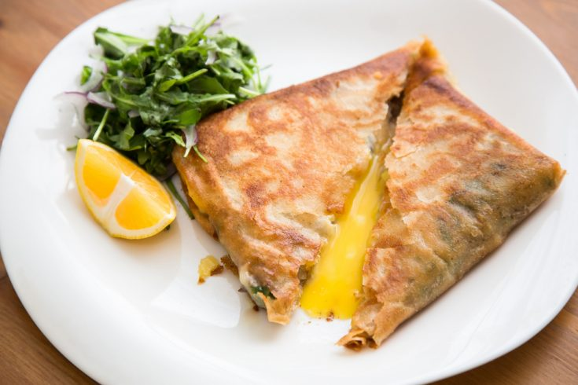

A staple of North African and Tunisian cuisine, you simply can’t claim to be familiar with Tunisian food if you haven’t had one (or twenty) tagines filled to the brim with couscous! It is the country’s national dish after all.
A dish originated by the Berbers who still inhabit southern Tunisia, but you can easily find this popular dish available around the world now.
Couscous is made from semolina wheat that is rolled into the extremely tiny pieces.
Traditional Tunisian couscous is typically served with chicken, fish, beef, or lamb, plus there are usually vegetables and peppers mixed in.
Ojja
This delicious tomato and egg dish is a popular Tunisian breakfast. While it’s eaten across North Africa, it’s believed to have been created in either Tunisia or Yemen. The name comes from the Tunisian Arabic slang for “mixture.”
The tomato sauce is flavored with garlic, chili peppers, and spices, and the eggs are poached.
You will typically find it served in either a skillet or in a tagine.
Lablabi
This Tunisian chickpea soup is flavored with garlic and cumin and served with perfectly stale bread to make this dish both scrumptious and filling.
You’ll find it garnished with eggs, parsley, and even scallions.
This is a great dish for enjoying the Tunisian winters, which, while still warm compared to much of the northern hemisphere, can get chilly (especially out in the desert).
Brik

A hand-me-down from Ottoman times, the Brik in Tunisia is a thin pastry wrapped around egg filling and fried. This dish has survived in other parts of the former Ottoman Empire in the form of bourek (in Algeria) and as burek (in the Balkans), though the egg version is the most specifically Tunisian variety.
Other potential fillings in Tunisia include tuna, chicken, anchovies, capers, and cheese.
This is a great breakfast, though it can be eaten at any time of day. It’s also a great Tunisian street food if you happen to be traveling in the country.
How to cook couscous !
Ingredients:
1lb couscous
1lb boneless lamb
200g caned chick peas
2 roma tomatoes
3 medium onions
4 hot peppers for decoration
carrots
any other vegetables of your choice, I used potatoes, zucchini